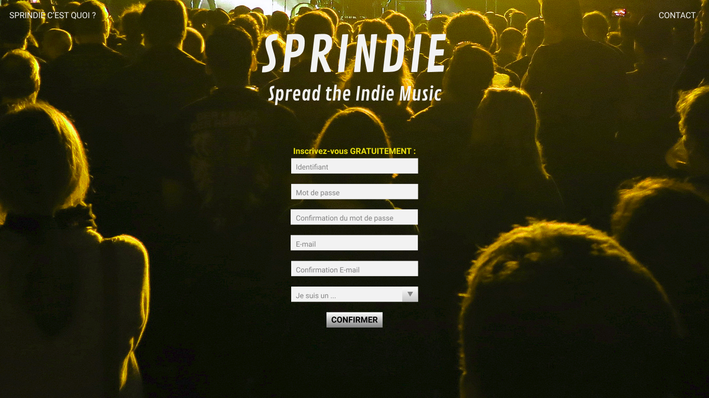
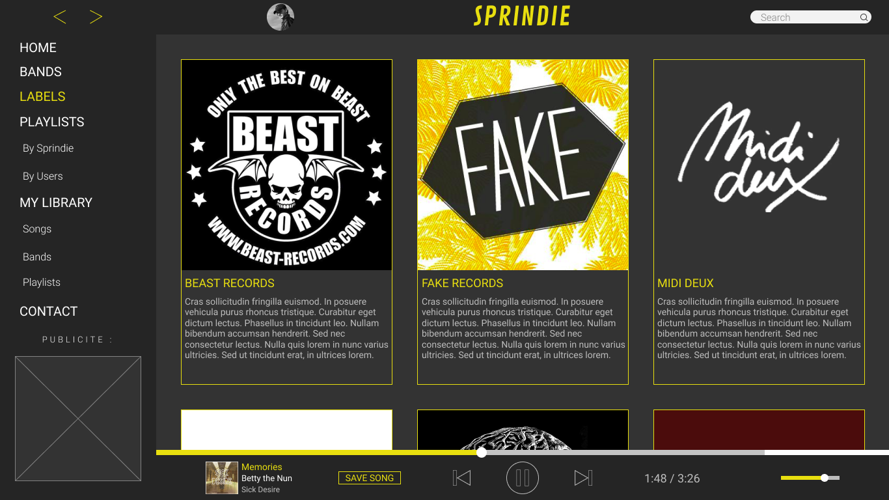

Site de musique en streaming spécialisé dans les groupes et labels indépendants.
Le site proposera les titres des groupes indépendants locaux en libre écoute, des pages sur les labels indépendants du coin et des playlists mélangeant les morceaux des différents groupes selon des thèmes spécifiques. Les utilisateurs devront
créer un compte gratuitement afin d'accéder à l'application ,de créer leurs propres playlists et les sauvegarder sur leur espace. Pour les groupes en activité, il faudra intégrer un lecteur vidéo YouTube afin d'afficher un de leurs clips ainsi
qu’un lecteur audio contenant un bouton télécharger pour les groupes qui offrent leurs morceaux gratuitement. Pour les groupes qui se sont séparés le but est de garder en ligne leurs morceaux pour que les utilisateurs puissent continuer à
les écouter.
Le header du site contiendra deux flèches permettant d'aller aux pages précédentes ou suivantes, la photo de profil de l'utilisateur (permettant d'accéder aux paramètres du compte), le logo du site et une barre de recherche en local.
La barre de navigation ne se situera pas dans le header à l'horizontal mais à gauche de la page et à la verticale sur toute la longueur (Comme l'application SPOTIFY).
Les 6 onglets seront:
- Home
- Bands
- Labels
- Playlists (Sous onglets: "By Sprindie", "By Users")
- My Library (Sous onglets: "Songs", "Bands", "Playlists")
- Contact
Les cibles de SPRINDIE sont les personnes étant dans la fourchette d'age de 15 à 40 ans. En effet SPRINDIE est un site s'addresant aux amateurs de musique, assez jeunes pour être plutôt à l'aise pour faire des recherches sur internet, utiliser
des sites de musique en streaming et avoir les bases de l'anglais. Vu que les utilisateurs seront plutôt jeunes, le design du site devra être moderne et intuitif.
Le site devra être codé de manière responsive afin d'ếtre consultable correctement sur mobile et tablette.
Un système de messagerie interne sera mis en place pour les groupes et labels pour qu'ils puissent échanger entre eux.
Accueil
De la même manière que Deezer, quand les utilisateurs accèderont au site SPRINDIE, ils arriveront directement sur la page d'inscription. Cette inscritpion gratuite leur permettra d'utiliser entièrement le site. Lors de leur inscription, les utilisateurs
devront préciser si ils sont "Un Artiste", "Un Label" ou un "Auditeur".
Pour les personnes n'ayant aucune idée du but de ce site, un onglet "SPRINDIE C'EST QUOI ?" sera accessible en haut à gauche afin de leur donner de plus amples informations.
De la même manière, si les futurs inscrits préfèrenet poser des questions au propriétaire du site avant de s'inscrire, un on "CONTACT" sera accessible en haut à droite de la page.

Home
Une fois connectés les utilisateurs attérissent sur la vraie page d'accueil du site, affichant les dernières playlists SPRINDIE crées ainsi que les derniers groupes ajoutés.
Bands
Cette page réunit tous les groupes recensés sur le site, dans l'ordre alphabétique.
Labels
Cette page réunit tous les labels indépendants recensés sur le site, dans l'ordre alphabétique.

Playlists by SPRINDIE
Cette page réunit toutes les playlists crées par le propriétaire du site, dans l'ordre d'ajout au site. Les plus récentes sont affichées en premières.
Lorsque les utilisateurs cliquent sur une playlist qui les intéresse, la page ci-dessous s'affiche. L'image de la playlist s'agrandit, une description s'affiche et la liste des morceaux contenus dans la playlist s'affichent en dessous.
Playlists by Users
Cette page fonctionne de la même manière que la précedente. La différence est qu'elle affiche les playlists créées par les utilisateurs.
Cette page affiche la liste de tous les morceaux enregistrés par l'utilisateur.
Cette page affiche les groupes suivis par l'utilisateur.
Cette page affiche les playlists suivies par l'utilisateur, ainsi que celles crées par lui-même.
Cette dernière page permet à l'utilisateur de contacter le propriétaire du site afin de l'informer de nouvelles sorties, de bugs, ou pour toute question.